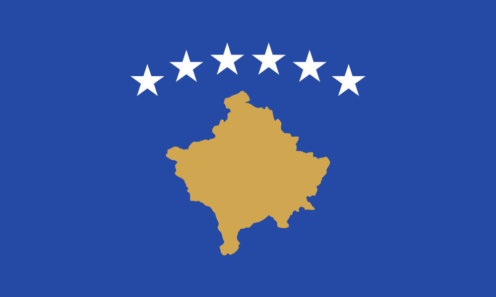

01 · History
We've got a lot of it.
Kosovo is a region in Southeast Europe with a rich and complex history. It was part of the Ottoman Empire for centuries before becoming part of Yugoslavia in the 20th century. In 1999, NATO intervened in Kosovo after a brutal conflict between Albanian separatists and Serbian forces.
Kosovo declared independence from Serbia in 2008 and has since been recognized as an independent country by over 100 nations, though its status is still not fully recognized by some states including Serbia.